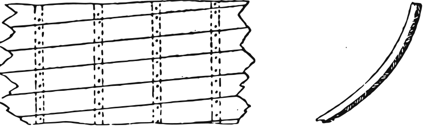
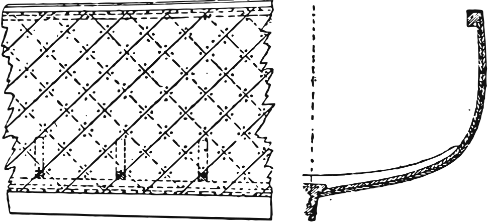
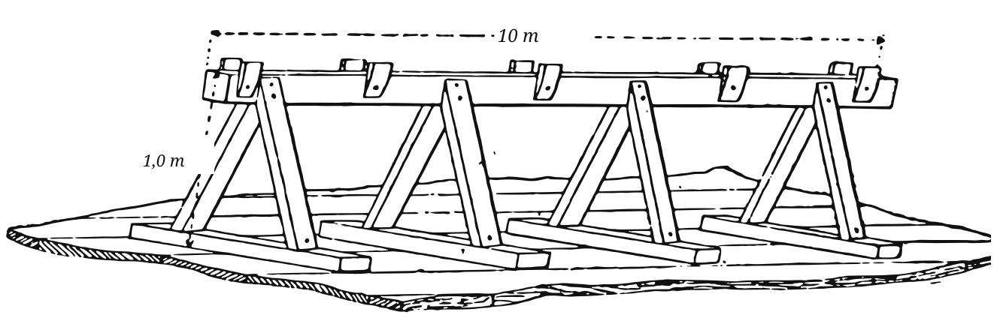
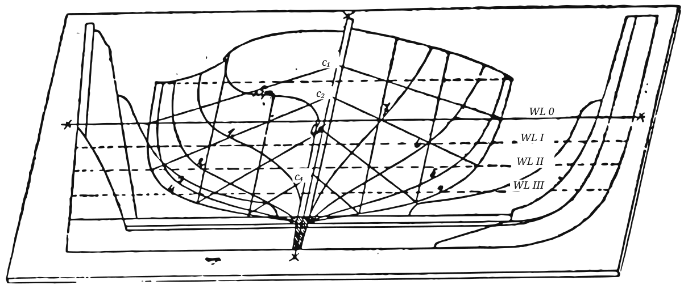

Im Januar 1885 eröffnete der Wassersport eine Folge, die nach dem Versprechen der Redaktion „Zeichnung für Zeichnung“ erklären sollte, wie die Vergnügungsboote jener Tage wirklich zusammengesetzt wurden. Ihr Verfasser, Th. Hein aus Kiel, war ein Mann der Praxis; er schreibt für den Liebhaber, der einen Schuppen, ein paar gute Werkzeuge und die Geduld hat, einer Anleitung zu folgen, und er führt den Leser von der Wahl der Werkstatt bis zum letzten Beschlag der Ruderduchten.
Die Folge erschien in sechs Fortsetzungen zwischen Januar und November 1885. Sie ist hier vollständig wiedergegeben, mit allen Figuren des Originals, neu gezeichnet. Die Zwischenüberschriften sind von uns eingefügt; Ausdrücke, die ein heutiger Bootbauer vielleicht nicht kennt, sind in den Anmerkungen erklärt. — L. Dudakov
Unter dieser Überschrift wollen wir eine Reihe von Zeichnungen verschiedenartig gebauter und eingerichteter Boote nebst Erklärungen über deren praktische Bauausführung bringen. Wir nehmen an, dass dieses Thema den Yacht- und Bootsbesitzern, den Bootbauern wie überhaupt unserem zahlreichen Leserkreise von großem Interesse sein wird; es handelt sich um unsere Lieblinge, in denen wir so schöne Stunden verleben, denen wir oft unser Leben anvertrauen, und es lohnt sich wohl der Mühe, diese etwas genauer kennenzulernen. Es sei zunächst die Aufgabe, die im sogenannten kleineren Sport verwendeten Vergnügungsboote und deren verschiedenartigen Bau in der Praxis zu erläutern.
Beim Vergnügungsboot unterscheidet man nach der Beplankung drei verschiedene Arten: den Klinker-, Krawel- und Diagonalbau.
Beim Klinkerbau (siehe Fig. 1) geschieht die Verbindung der einzelnen Planken durch Übereinanderlegen der einzelnen Gänge; dieselben werden mittels kupferner oder verzinkter Eisennägel, auf untergelegte Scheiben (Gaten) vernietet, verbunden.

Beim Krawelbau (siehe Fig. 2) stoßen die Plankengänge aufeinander; die Inhölzer bestehen aus festen, nach der Form des Bootes geschweiften Hölzern. Die punktierten beiden Linien deuten das Inholz an.
Beim Diagonalbau (siehe Fig. 3) gehen die Planken in einer doppelten Lage unter einem Winkel von 45° von der Kielsponung bis zur Sponung im Dollbaum, und zwar liegt die untere Lage unter einem Winkel von 45° nach hinten, die obere Lage unter einem Winkel von 45° nach vorn geneigt. Die punktierten Linien geben die innere und die ausgezogenen Linien die äußere Lage der Planken an.

Bevor wir mit dem eigentlichen praktischen Bau eines Bootes beginnen, ist es noch erforderlich, die Vorbereitungen zum Bau, den Ort der Aufstellung, die Helling usw. einer kurzen Besprechung zu unterziehen.
Man wähle zum Bau eines Bootes einen überdachten Raum, einen Schuppen etc., um den Bau nicht nachteiligen Witterungsverhältnissen und Witterungswechsel aussetzen zu müssen. Hierfür dürfte sich ein Holzschuppen mit gutem Ober- und Seitenlicht und Bretterfußboden oder Hirnholzpflaster am besten eignen.
Sodann ist ein langer Holzbock, der Länge des Bootes entsprechend, anzufertigen; für die gewöhnliche Art von Vergnügungsbooten kann er bis zu 10 m lang sein. Dieser Bock bildet die Unterlage des Bootes und erfüllt denselben Zweck wie bei einem großen Schiffe die Helling. Die Anfertigung kann nach Skizze Fig. 4 erfolgen, bei welcher die Maße in Metern eingeschrieben sind.

Nunmehr schreite man zur Anfertigung eines Plans, auf welchen der Spantenriss, der Vorder- und Hintersteven des zu erbauenden Bootes in natürlicher Größe aufgeschnürt wird. Einen solchen Planriss mit aufgeschnürtem Spantenriss, Vorder- und Hintersteven zeigt Fig. 5.

Jetzt kann die Anfertigung der Modelle (Mallen) erfolgen, welche aus 25 mm starken fichtenen Brettern in der Art, wie Fig. 6 zeigt, nach den einzelnen Spantlinien (für jedes Spant ein Modell) angefertigt und verbunden werden können. Da auf dem Plan nur die eine Seite des Bootes durch den Spantenriss dargestellt ist, so müssen zwei Modelle für jedes halbe Spant angefertigt werden, und zum Zwecke des Zusammenlegens des ganzen Spantenmodells müssen die Höhen- und Breitenpunkte des Schandeckels des betreffenden Spantes auch nach der entgegengesetzten Seite der ausgestreckten Spantlinie abgetragen und nach diesem Punkte das eine halbe Spantenmodell umgelegt werden.